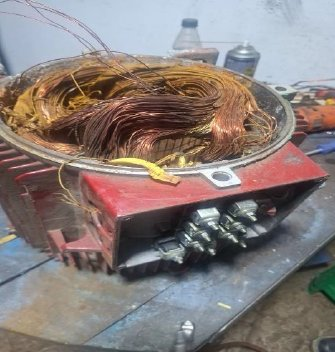
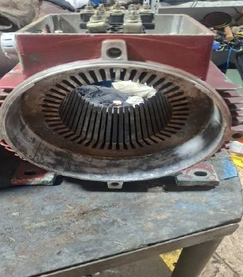
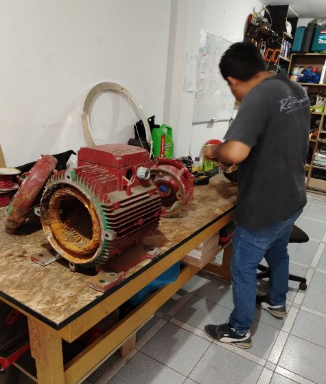
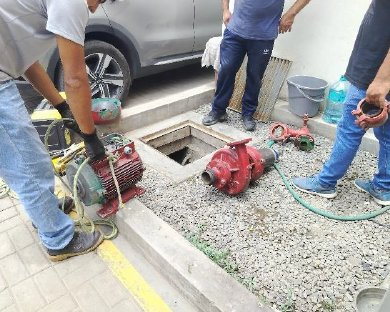
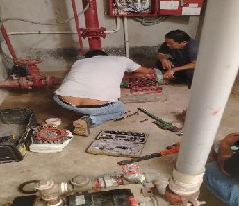
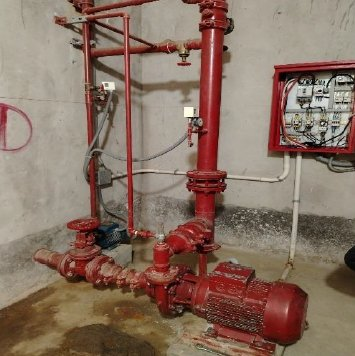
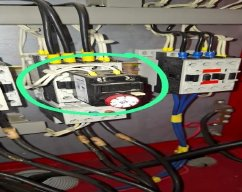
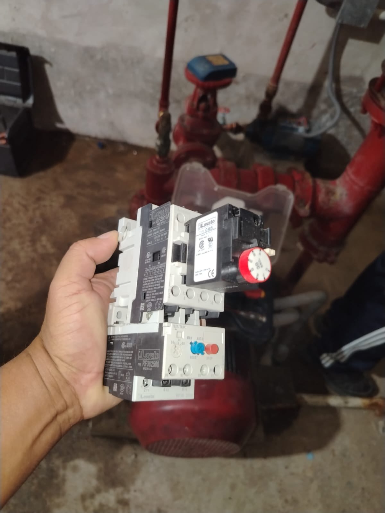
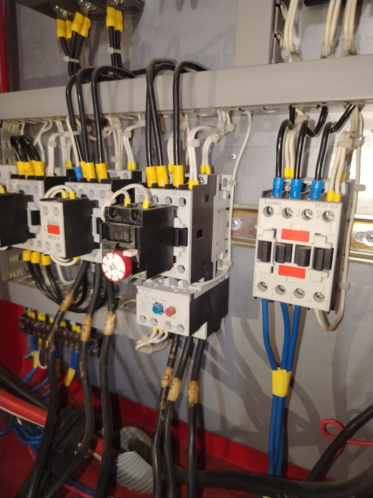

Situación Inicial — Cómo se encontró
Estado del sistema antes de la intervención
El motor de la bomba contra incendios fue encontrado completamente desarmado y fuera de servicio. Las bobinas presentaban quemaduras y el contactor eléctrico estaba dañado, dejando el sistema de seguridad del edificio sin funcionamiento.
 Motor y piezas desarmadas
Motor y piezas desarmadas
 Bobina del contactor
Bobina del contactor
 Cuarto de bombas - estado inicial
Cuarto de bombas - estado inicial
Reparación y Rebobinado del Motor
Proceso técnico de recuperación del motor eléctrico
Se llevó a cabo el rebobinado completo del motor eléctrico en taller especializado. Este proceso consiste en reemplazar el cobre de los devanados internos que se habían quemado, restaurando la capacidad eléctrica original del motor.

Extracción del cobre quemado
Estátor limpio listo para rebobinar
Técnico en taller especializadoProceso de Instalación
Reinstalación del motor y conexiones eléctricas
Una vez reparado el motor en el taller especializado, se procedió a su traslado e reinstalación en el sistema contra incendios del edificio. El equipo técnico realizó el montaje completo, las conexiones eléctricas y el alineamiento del motor con la bomba, dejando el sistema listo para la prueba con agua, pendiente de la reparación de la válvula principal.

Traslado e instalación del motor
Conexiones y montaje en sala
Sistema reinstalado y listoReparación de Bobina del Contactor
Reemplazo del componente eléctrico de control
El contactor eléctrico — componente que controla el arranque y parada del motor de la bomba — se encontraba con la bobina quemada y sin funcionamiento. Se identificó el contactor dañado en el tablero eléctrico, se adquirió un contactor nuevo marca Lovato de igual especificación técnica, y se realizó su reemplazo e instalación en el tablero, dejando el control eléctrico del sistema completamente operativo.

Contactor dañado identificado en tablero
Contactor nuevo Lovato adquirido
Tablero con contactor instaladoSituación Actual
Estado del sistema al día de hoy
El motor fue reparado y reinstalado correctamente. Sin embargo, al intentar realizar la prueba con agua, se encontró que la válvula principal del sistema está completamente atascada — no se puede abrir. Esto se debe a que nunca fue utilizada desde que la Constructora hizo entrega del edificio, y no existe ningún informe ni constancia de que el sistema haya sido probado en su momento.
La válvula se realizará durante la limpieza programada de la cisterna (Junio–Julio 2026), cuando se evacúe el agua para poder desmontar, llevar a reparar y reinstalar correctamente.
Aplicar WD-40 o aceite penetrante en el vástago y prensaestopas. Dejar actuar 24–48h y usar llave stilson con palanca. Costo: S/15–25. Primera opción a intentar — económica y efectiva.
Si el lubricante no funciona, durante la evacuación de la cisterna (Jun–Jul 2026) se desmontará la válvula y se llevará a reparación en taller especializado.
Proyección — Próximos pasos
Plan de acción para completar el sistema
Intentar con lubricante penetrante primero. De no funcionar, se realizará el desmontaje completo durante la limpieza de cisterna (Junio–Julio 2026).
Una vez reparada la válvula, se realizará la prueba con agua para verificar presión, caudal y funcionamiento integral.
Se emitirá un documento oficial invitando a los bomberos a realizar las pruebas certificadas del sistema y capacitar a los residentes en el manejo del equipo ante una eventual emergencia. El apoyo y participación de todos los propietarios es fundamental.
Trabajamos para proteger a cada familia
La Junta Directiva está dando seguimiento puntual a cada pendiente. Con tu apoyo y pago puntual de las cuotas, podremos completar este sistema y tener un edificio certificado y seguro ante cualquier emergencia.